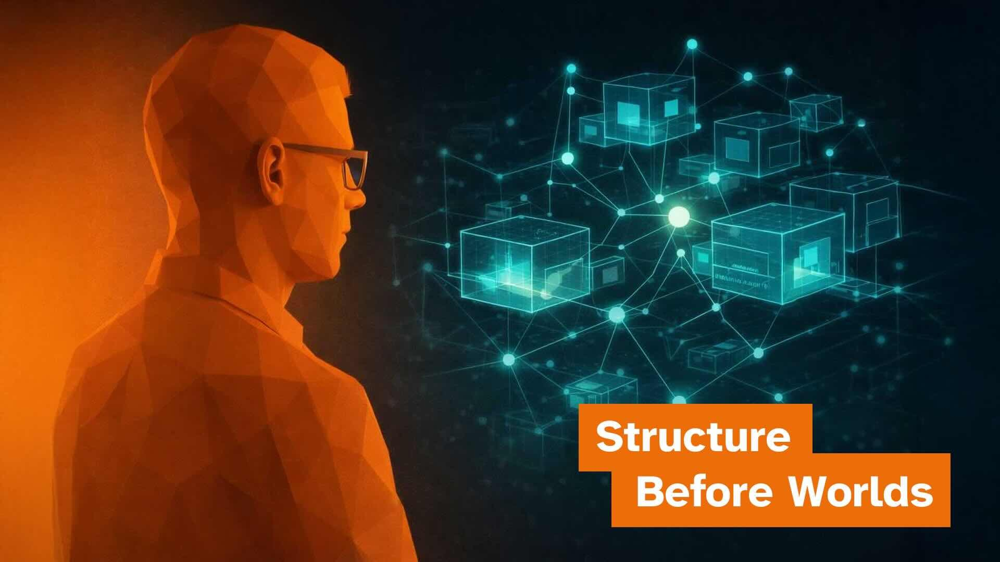

Warum Apple dem Metaverse näher ist als Meta


- Apple nähert sich dem ursprünglichen Metaverse-Gedanken nicht über geschlossene virtuelle Welten, sondern über den Aufbau einer strukturellen Grundlage für vernetzte räumliche Inhalte.
- OpenUSD definiert erstmals eine offene, adressier- und verlinkbare Struktur für räumliche Inhalte, vergleichbar mit der Rolle von URLs im frühen Web: Spatial Backdrop.
- Apple ist derzeit der erste große Plattformanbieter, der diese OpenUSD-basierte Struktur produktiv einsetzt und in reale Anwendungen überführt. Die Erfahrung aus der frühen Web-Entwicklung zeigt, dass nicht visionäre Konzepte, sondern frühe praktische Umsetzbarkeit über langfristige Durchsetzung entscheidet.
Dieser Artikel richtet sich an Leser, die sich weniger für Produktankündigungen interessieren als für die strukturellen Grundlagen von 3D-Inhalten, Environments und dem Spatial Web: Egal ob es in Zukunft Datenautobahn, WorldWideWeb oder Metaverse genannt wird.
Apple ist heute näher an der ursprünglichen Idee des Metaverse als Meta. Nicht, weil Apple ein Metaverse baut, sondern weil Apple die strukturellen Voraussetzungen dafür ernst nimmt. Diese Aussage wirkt auf den ersten Blick provokant. Meta hat Milliarden investiert, ganze virtuelle Welten geschaffen und den Begriff „Metaverse“ global geprägt. Apple-Mitarbeiter hingegen weigern sich bis heute konsequent, dieses Wort überhaupt zu benutzen.
Gerade dieser Widerspruch lohnt eine genauere Betrachtung.
→ OpenUSD in der Praxis: OpenUSD-Dienstleister viSales
Warum Apple den Begriff „Metaverse“ meidet
Apple vermeidet den Begriff „Metaverse“ bewusst. Und das ist klug. Der Begriff ist gerade durch Meta kulturell und visuell stark besetzt: Comic-Avatare, Fantasiewelten, überhöhte Erwartungen.
“Glaube nicht, dass die Leute wissen, was das Metaverse ist.”
Tim Cook, CEO Apple, via heise.de
Apple möchte keine Utopie verkaufen, sondern ein Interface etablieren. Keine neue Identität, sondern einen neuen Umgang mit digitalen Räumen = Spatial Computing.
Was mit „Metaverse“ ursprünglich gemeint war
Der Begriff „Metaverse“ stammt aus dem Roman Snow Crash von Neal Stephenson. Dort beschreibt er keinen einzelnen virtuellen Ort und keine Plattform, sondern ein Netzwerk aus digitalen Räumen, durch das man sich bewegt. Das Metaverse ist dort kein Spiel, sondern eine Struktur. Räume sind miteinander verbunden. Übergänge sind selbstverständlich. Man verlässt keinen Kontext, sondern setzt ihn fort.
Ein solches Metaverse existiert bis heute nicht. Was wir aktuell sehen, sind Vorstufen: geschlossene VR-Welten einzelner Unternehmen mit starkem Fokus auf soziale Interaktion, aber ohne echte Offenheit und Adressierbarkeit.
Jeder Anbieter schafft sein kleines Ökosystem.
Nerd-Realismus: Top-down gegen Bottom-up
Noch sind viele der hier beschriebenen Inhalte nur mit einer rund 4.000 Euro teuren Apple Vision Pro über den Safari-Browser erlebbar. Das ist weit entfernt vom Massenmarkt. Historisch ist dieser Weg jedoch bekannt: neue Medien beginnen oft teuer, komplex und funktional überlegen.
Mich erinnert das stark an frühe Internetzeiten, als Netzzugang Akustikkoppler, Geduld und technisches Interesse voraussetzte.
Apple verfolgt damit einen klaren Top-down-Ansatz. Zuerst werden Möglichkeiten, Qualität und Struktur ausgelotet. Reichweite ist nachrangig. Das Ziel ist nicht frühe Verbreitung, sondern ein belastbares Fundament.
Meta geht den entgegengesetzten Weg. Mit deutlich günstigeren Headsets um 500 Euro adressiert man früh den Massenmarkt, akzeptiert dafür aber funktionale, qualitative und strukturelle Einschränkungen. Das ist ein klassischer Bottom-up-Ansatz: Reichweite zuerst, Reife später.
Beide Strategien sind legitim. Entscheidend ist nicht der Einstiegspreis, sondern welche Architektur langfristig tragfähig ist.
Historische Parallele: Newton, Palm und der lange Atem
Ein ähnlicher Wettlauf hat sich bei Apple bereits in den 1990er-Jahren gezeigt. Mit dem Apple Newton verfolgte Apple früh einen Top-down-Ansatz: leistungsfähig, visionär, technisch seiner Zeit voraus – aber teuer, komplex und nicht massentauglich.
Der damalige Wettbewerber Palm wählte den entgegengesetzten Weg. Der Funktionsumfang war begrenzt, die Geräte waren günstiger und sofort praktikabel. Kurzfristig gewann der Bottom-up-Ansatz, der Markt entschied sich für Einfachheit und Preis.
Langfristig setzte sich jedoch nicht Palm durch, sondern eine neue Geräteklasse: Feature-Phones und mobile Organizer mit stärker integrierten Funktionen. Auch diese Phase war nicht final. Mit iPhone und iPad kehrte Apple Jahre später zurück – erneut top-down, erneut mit höherem Preis, aber diesmal mit ausgereifter Technologie, klarer Plattformlogik und deutlich größerem Markt.
Die Lehre daraus ist keine Vorhersage, sondern ein Muster: Top-down-Ansätze verlieren oft die erste Runde, aber nicht zwingend den Wettlauf.
OpenUSD als Grundlage eines offenen Metaverse: Apple baut keine Welt, sondern adressierbare Räume
Apple verfolgt einen grundsätzlich anderen Ansatz. Apple denkt nicht in Welten, sondern in Räumen, die technisch wie Inhalte behandelt werden.
Schon heute lassen sich für die Apple Vision Pro mehrteilige VR-Erlebnisse umsetzen, die ohne App-Installation funktionieren. Diese Spatial Backdrop / Environments sind über URLs erreichbar -liegen also wie jede Website auf einem beliebigen Webserver- und können untereinander verlinkt werden. Der Übergang in den nächsten Raum erfolgt nicht über Menüs oder Teleportpunkte, sondern über einen simplen Link.
Damit entsteht etwas, das näher an der ursprünglichen Metaverse-Idee liegt als viele der aktuell diskutierten Plattformen: ein räumliches Kontinuum aus verbundenen Orten.
Im folgenden Video erkläre ich, was Apple unter „Environments“ & “Spatial Backdrops” versteht, wie sie technisch funktionieren und warum sie bereits heute die Grundlage für verlinkte 3D-Räume bilden.
Embed: https://www.youtube.com/watch?v=0R67WhTgq-A
Früher als gedacht – Apples „Real-Life-Verse“ und die Metaio-Wurzeln
Die aktuelle Diskussion um Environments, OpenUSD und verlinkte 3D-Räume wirkt für viele neu. Tatsächlich reichen zentrale Bausteine dieses Ansatzes deutlich weiter zurück.
Bereits schon vor 2013 arbeitete das Münchener AR-Startup Metaio an der Idee, reale Orte dauerhaft mit digitalen Inhalten zu verknüpfen – inklusive Tracking und räumlicher Persistenz. Diese Technologie konnte ich damals selbst praktisch erleben, lange bevor Begriffe wie Metaverse oder Spatial Web verbreitet waren.
2015 übernahm Apple Metaio. Viele der späteren ARKit-Konzepte, Location-Anchors und heute diskutierten Environments lassen sich auf diese frühen Arbeiten zurückführen.
Jahre später wurde dieser Ansatz von mir als „Real-Life-Metaverse“ beschrieben – ein Begriff, den Apple selbst nie verwendet hat, der aber die Richtung gut beschreibt: adressierbare, reale Räume statt virtueller Parallelwelten mit dem neuen HTML-Standard “Spatial Backdrop”.
Der Blick auf diese Vorgeschichte verändert die Perspektive auf Apples heutige Strategie. Weniger als plötzlicher Kurswechsel, mehr als langfristige technologische Linie, die erst jetzt sichtbar wird.
→ Apples “Real-Life-Verse”, seit 2020 in der US-Beta
Einordnung & Diskussion ausdrücklich erwünscht: Wer eine eigene Position dazu einbringen möchte: Mit einem abonnierten Newsletter-Account lässt sich auf der Website einloggen und direkt unter dem Beitrag kommentieren.
Warum URLs in VR ein struktureller Unterschied sind
Räume, die per URL erreichbar sind, folgen nicht der Logik von Games, sondern der Logik des Webs. Das ist kein technisches Detail, sondern eine grundlegende Weichenstellung.
Ein Raum wird dadurch:
- eindeutig adressierbar
- unabhängig von einer Plattform (wie z.B. Meta)
- kombinierbar mit anderen Inhalten
- versionierbar und austauschbar
Meta skaliert heute vor allem soziale Interaktion und Aufmerksamkeit. Apple skaliert Struktur und Wiederverwendbarkeit. Dieser Unterschied ist zentral, wenn man über Nachhaltigkeit und Wachstum von 3D-Welten spricht.
Spatial Websites als verlinkte 3D-Struktur
Der Gedanke, Räume wie Webseiten zu behandeln, lässt sich heute bereits konkret umsetzen. Unter dem Begriff „Spatial Website“ fassen wir diesen Ansatz zusammen: Von einfachen 3D-Seiten bis hin zu komplexen Environments.
→ Spatial Website: Wenn 3D-Räume wie Webseiten funktionieren
**Was bei Apple noch fehlt**
Apple ist bei der strukturellen Grundlage räumlicher Inhalte weit – aber nicht fertig. Einige zentrale Bausteine fehlen noch oder sind nur indirekt lösbar:
Multi-User-Fähigkeit auf Web-Ebene*
Verlinkte USDZ-Environments lassen sich heute einzeln aufrufen, aber noch nicht synchron von mehreren Nutzern gleichzeitig erleben. Multi-User ist aktuell App-gebunden, nicht Web-nativ.
Direkte Interaktion innerhalb von Web-Environments
USDZ-Environments sind animiert, aber nicht voll interaktiv. Steuerung ist derzeit nur über Umwege möglich, etwa durch zusätzliche Web-Interfaces im Safari-Browser.
Dynamisches Nachladen von Inhalten
Verlinkte Räume sind aktuell weitgehend statisch. Ein vorgeschlagener USDZ-Standard sieht vor, dass Environments künftig weitere USDZ-Inhalte nachladen können – das würde die Größe und Tiefe dieser Räume erheblich erweitern.
*Zugänglichkeit und Reichweite
Viele dieser Konzepte sind derzeit nur mit einer Apple Vision Pro sinnvoll nutzbar. Das erinnert an frühe Internetzeiten: funktional beeindruckend, aber noch kein Massenmedium.
Meine persönliche Einschätzung: Keine dieser Lücken wirkt fundamental. Sie betreffen weniger die Architektur als die Umsetzung – und könnten vergleichsweise schnell geschlossen werden, wenn Apple diesen Weg konsequent weitergeht.
Vendor Lock-in vermeiden, oder warum offene Environments strategisch sind
Einer der zentralen Vorteile offener Formate wie OpenUSD und USDZ liegt in einem Punkt, der in vielen Metaverse-Diskussionen untergeht: der Vermeidung von Vendor Lock-in.
Wenn räumliche Environments auf offenen Standards basieren, sind Inhalte nicht untrennbar an einen einzelnen Hersteller, eine Plattform oder einen spezifischen Player gebunden. Ein Environment ist dann kein Produkt eines Ökosystems, sondern ein eigenständiges digitales Asset.
Prinzipiell kann jeder Anbieter einen eigenen Player entwickeln, der diese Environments abspielt – auf anderen Headsets, auf Desktop-Systemen oder auf zukünftiger Hardware. Der Player wird austauschbar, der Inhalt bleibt.
Das ist ein fundamentaler Unterschied zu klassischen Plattform-Metaversen. Dort liegen Welten, Nutzer, Interaktionen und Monetarisierung vollständig innerhalb eines geschlossenen Systems. Ein Plattformwechsel bedeutet dort meist einen kompletten Neubau.
Meine persönliche Einschätzung: Für Unternehmen ist das kein akademischer Unterschied, sondern eine strategische Frage. Offene Environments reduzieren technologische Abhängigkeiten, verlängern die Nutzungsdauer von Inhalten und ermöglichen es, neue Hardware oder neue Anbieter einzubinden, ohne bestehende Investitionen zu verlieren.
Langfristig entscheidet sich hier, ob räumliche Inhalte Teil eines offenen digitalen Ökosystems werden – oder erneut in proprietären Silos enden.
**Offene Frage: Wer spielt diese Environments morgen ab?**
Ein oft übersehener Aspekt der aktuellen Entwicklung ist der Open-Source-Charakter der zugrunde liegenden Technologien. Wenn räumliche Environments auf offenen Formaten wie OpenUSD und USDZ basieren, sind sie nicht zwangsläufig an einen einzelnen Anbieter oder Player gebunden.
Prinzipiell könnte jeder Hersteller einen eigenen Player entwickeln, der diese Environments abspielt – auf anderen Headsets, auf Desktop-Systemen oder in zukünftigen Geräten. Die Inhalte wären nicht exklusiv, sondern portabel.
Das unterscheidet diesen Ansatz grundlegend von klassischen Plattform-Metaversen. Dort sind Welten, Nutzer und Inhalte untrennbar an einen Anbieter gekoppelt. Bei offenen Environments liegt der Wert nicht im Player, sondern in der Struktur der Inhalte selbst.
Meine persönliche Einschätzung: Apple profitiert aktuell davon, als Erster eine hochwertige Wiedergabeumgebung zu liefern. Der eigentliche strategische Vorteil liegt jedoch woanders: Wenn sich offene Environments etablieren, entsteht ein Ökosystem, in dem Player austauschbar sind – ähnlich wie Browser im Web.
Embed: https://youtu.be/6eHVZESUXsQ
Persönliche Einschätzung: Apple ist strukturell weiter als Meta
Aus meiner Sicht ist Apple dem Metaverse-Gedanken derzeit näher als Meta. Nicht sichtbar, sondern architektonisch.
Meta baut Welten und versucht, sie im Nachhinein zu verbinden. Apple baut Verbindungen und lässt dann (von Nutzern) Welten daraus entstehen. Das wirkt langsamer und weniger spektakulär, ist aber langfristig stabiler. Der Vergleich mit der Mediengeschichte drängt sich auf:
Video existierte lange vor Streaming-Plattformen. Erst als Formate, Standards und Abspielbarkeit geklärt waren, konnten Plattformen entstehen.
Apple agiert beim räumlichen Internet auffällig ähnlich.
Persona statt Avatar: Begriff, Haltung und Technik
Apple spricht nicht von Avataren, sondern von Personas – und diese Wortwahl ist bewusst gewählt.
Der Begriff Avatar leitet sich aus dem Sanskrit ab. Dort bedeutet अवतार (Avatāra) „Abstieg“ und bezeichnet im Hinduismus das Herabsteigen einer Gottheit in die irdische Welt, insbesondere die Inkarnationen Vishnus. Über die Jahre hat sich der Begriff im digitalen Kontext verselbständigt und steht heute meist für comichafte Stellvertreterfiguren oder Rollenbilder.
Meine Einschätzung: Apple vermeidet diesen Begriff konsequent. Als globaler Konzern ist man sensibel für kulturelle und religiöse Konnotationen – und ebenso für die ästhetischen Bedeutungen, die sich im digitalen Raum etabliert haben. Personasstehen dagegen nicht für Verkleidung oder Stellvertretung, sondern für eine abstrahierte, aber erkennbare Darstellung der realen Person.
Mit der Apple Vision Pro hat Apple diesen Ansatz technisch deutlich weiterentwickelt. Die aktuellen Personas erreichen einen Reifegrad, bei dem Mimik, Blickrichtung und nonverbale Reaktionen so präzise erfasst werden, dass sie im beruflichen Alltag einsetzbar sind – etwa für B2B-Gespräche, Präsentationen oder Abstimmungen.
Technisch sind diese Personas keine isolierten Gimmicks. Sie basieren im Kern ebenfalls auf OpenUSD-Strukturen, erweitert um moderne Verfahren wie Gaussian Splatting, um Gesichter und Ausdruck möglichst realitätsnah und performant darzustellen.
Meine persönliche Einschätzung: Diese Kombination aus bewusster Begriffswahl, kultureller Zurückhaltung und technischer Reife passt zu Apples grundsätzlichem Ansatz: Identität wird nicht inszeniert, sondernintegriert– als Teil einer offenen, strukturell gedachten räumlichen Umgebung.
→ Avatar, Persona, Animoji – Apples Ansatz zur digitalen Identität
Was heute noch fehlt – und warum das kein Fundamentproblem ist
Natürlich ist dieser Ansatz noch nicht vollständig. Die heutigen webbasierten Environments (Spatial Backdrops) sind primär Single-User-Erlebnisse. Multi-User-Funktionen existieren bereits in App-Kontexten wie einem Facetime-Call, aber noch nicht durchgängig im Browser-basierten Zugriff. Auch Interaktion ist aktuell nur indirekt zu lösen, etwa über begleitende Web-Interfaces. Das ist funktional, aber noch nicht elegant.
Wichtig ist jedoch: Diese Punkte betreffen den Player und die Produktentscheidung, nicht das zugrunde liegende Datenmodell. OpenUSD und USDZ sind bereits darauf ausgelegt, Inhalte nachzuladen, zu erweitern und zu verknüpfen. Wachstum ist vorgesehen, kein Sonderfall.
Und wenn ein anderer Anbieter einen Environment-Player für Desktop-Browser-Nutzer entwickeln mag, die Enviroment-Technologie ist OpenSource und die Enviroment-Dateien liegen ja auf verteilten Servern, nicht auf einem zentralen Server eines Monopolanbieters.
**Vom virtuellen Rundgang zu verlinkten Environments**
Virtuelle Rundgänge sind für viele Unternehmen der erste praktikable Einstieg in räumliche Inhalte. Sie lassen sich heute bereits mit Übergängen, VR-Ansichten und Environments kombinieren – ohne Plattformzwang.
OpenUSD statt Metaverse-Versprechen
Apple setzt früh und konsequent auf OpenUSD und USDZ. Nicht als Marketing-Buzzword, sondern als Infrastruktur.
Das bedeutet: Räume können - bald, wenn die gerade diskutierte Nachladeoption umgesetzt ist - größer werden, ohne neu gebaut zu werden. Inhalte bleiben anschlussfähig. Welten müssen nicht monolithisch gedacht werden. Genau diese Denkweise fehlt vielen Metaverse-Konzepten, die heute vor allem visuell beeindrucken wollen.
Ein Blick zurück: Apple denkt seit drei Jahrzehnten in Räumen
Bereits vor genau 30 Jahren, in den 1990er-Jahren experimentierte Apple mit QuickTime VR . Dabei ging es nicht um Spiele oder virtuelle Welten, sondern um die Idee, digitale Räume als navigierbare Medien zu begreifen.
Diese Denkweise ist heute wieder sichtbar: Environments auf der Apple Vision Pro sind keine abgeschlossenen Erlebnisse, sondern adressierbare Räume, die sich verbinden, erweitern und weiterdenken lassen. Der Unterschied zu damals liegt weniger im Konzept als in der technischen Grundlage.
Wie sich diese frühe Raumlogik mit OpenUSD zu einer skalierbaren technischen Grundlage - von “Findet Nemo zum Digital Twin” - weiterentwickelt hat, beschreibe ich hier ausführlicher.
Persönliche Nerd-Anmerkung
Apple hat in der Vergangenheit mehrfach alte Produktnamen nach Jahrzehnten neu verwendet und ihnen eine aktualisierte Bedeutung gegeben. Nicht als Retro-Geste, sondern als bewusste Wiederanknüpfung an ein bestehendes Denkmodell.
Schaut man auf die aktuelle Toolchain rund um USDZ und OpenUSD, deutet sich erneut ein solcher Übergang an. Auf den ersten USDZ-Editor Reality Composer (seit 2019 unverändert) folgte mit Reality Composer Pro eine klar professionellere Ausrichtung. Vieles spricht dafür, dass dies nicht das Ende, sondern eine Zwischenstufe ist.
Aus meiner Sicht steht Apple hier vor einer dritten Generation von Werkzeugen, die weniger einzelne Apps, sondern eine konsistente Medienlogik abbilden könnten: adressierbare, zeitbasierte, räumliche Inhalte.
Persönliche Hoffnung: Sollte Apple dieser Toolchain eines Tages wieder den Namen QuickTime (ohne VR) geben, wäre das weniger nostalgisch als konsequent. QuickTime stand nie für ein Format, sondern für den Umgang mit Medien über Zeit und Raum hinweg.
Offenes Ende: Wer trifft sich wo?
Ob sich Apples strukturorientierter Ansatz und Metas sozialer Plattformansatz langfristig treffen, ist offen. Ebenso offen ist, welche Rolle andere Akteure wie Google dabei spielen werden.
Sicher ist nur: Wer heute ausschließlich auf Avatare und Plattformen schaut, übersieht, wo die eigentliche Arbeit stattfindet. Und die passiert derzeit nicht im Rampenlicht, sondern in Datenmodellen, Toolchains und Wiedergabestrukturen.
Viele Grüße aus Velbert,
PS: Dieser Beitrag ist kein Technologiestatement. Er ist eine Beobachtung aus dem Vertrieb, denn viele Unternehmen diskutieren immersive Formate, ohne zu klären, welche strukturellen Annahmen sie damit festschreiben – für Kosten, Geschwindigkeit und Skalierung im RollOut & Verkauf.
P.S.S.: Wenn ihr euch fragt, warum Visualisierungen intern immer wieder neu begründet werden müssen, liegt das selten am Inhalt. Sondern an der fehlenden gemeinsamen Datenlogik dahinter. Genau dort beginnt das Gespräch, für das ich diesen Text schreibe.
P.S.S.S.: 21. März 2026: Ich habe eine kleine Demo-App Mosaic 2 für die Reise durch die Welt der Spatial Backdrops / Website-Environments via Vibecode erstellt.
Dieser Text entstand im Rahmen meiner Vorbereitungen für eine Seite zum Thema OpenUSD für Entscheider und wird in Zukunft auf der neuen Seite unter “Weitere Infos” als Longread angeboten werden.
Diese Einordnungen richten sich explizit an Marketing- und Verkaufsleiter, die in mittelständischen Unternehmen gemeinsam Verantwortung für Vertriebswirkung, Investitionen und Entscheidungsfähigkeit tragen. Im Newsletter führe ich sie anhand realer Kundenprojekte weiter.
Du willst wissen ob AR & 3D für dein Produkt passt?
In 30 Minuten sortieren wir gemeinsam, ob und wo AR in eurem Vertrieb konkret etwas bringt — ohne Pitch, ohne Angebot. Kein Verkaufsdruck, eine ehrliche Einordnung. Rheingas und Somfy haben so angefangen.
Das fragen Entscheider
Warum ist Apple dem Metaverse näher als Meta?
Apple baut keine virtuelle Welt, sondern eine strukturelle Grundlage für vernetzte räumliche Inhalte. Mit OpenUSD und adressierbaren Environments entstehen Räume, die per URL erreichbar und miteinander verlinkbar sind – ähnlich wie Webseiten im frühen Internet. Meta skaliert soziale Interaktion; Apple skaliert Struktur und Wiederverwendbarkeit.
Was sind Spatial Websites und wie funktionieren sie?
Spatial Websites sind dreidimensionale Räume, die wie normale Webseiten über eine URL erreichbar sind und auf einem beliebigen Webserver liegen. Für die Apple Vision Pro lassen sich mehrteilige VR-Erlebnisse ohne App-Installation umsetzen, die untereinander verlinkt werden können. Der Übergang in den nächsten Raum erfolgt über einen einfachen Link.
Warum vermeidet Apple den Begriff „Metaverse“?
Apple möchte keine Utopie verkaufen, sondern ein Interface etablieren. Tim Cook sagte selbst: „Glaube nicht, dass die Leute wissen, was das Metaverse ist.“ Der Begriff ist durch Meta kulturell stark besetzt – Comic-Avatare, Fantasiewelten, überhöhte Erwartungen. Apple setzt stattdessen auf den Begriff Spatial Computing und denkt in adressierbaren Räumen statt in geschlossenen Welten.
Was ist der Unterschied zwischen Avatar und Persona bei Apple?
Apple spricht bewusst nicht von Avataren, sondern von Personas. Während Avatare für comichafte Stellvertreterfiguren stehen, repräsentiert die Persona eine abstrahierte, aber erkennbare Darstellung der realen Person. Technisch basieren Personas auf OpenUSD-Strukturen, ergänzt durch Gaussian Splatting für realitätsnahe Mimik und Blickrichtungen.
Was fehlt Apple noch auf dem Weg zum offenen Metaverse?
Drei Punkte fehlen noch: erstens echte Multi-User-Fähigkeit im Browser (aktuell nur App-gebunden), zweitens direkte Interaktion innerhalb von Web-Environments (derzeit nur über begleitende Web-Interfaces), und drittens dynamisches Nachladen von Inhalten. Keiner dieser Punkte betrifft die Architektur – alle könnten vergleichsweise schnell gelöst werden.